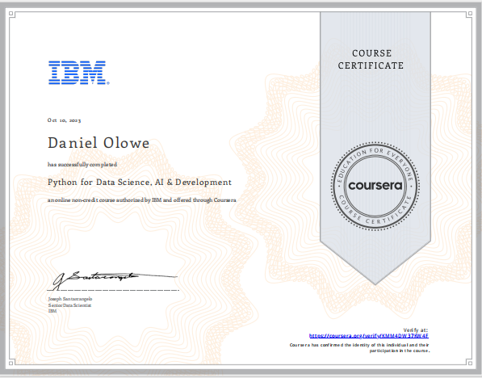
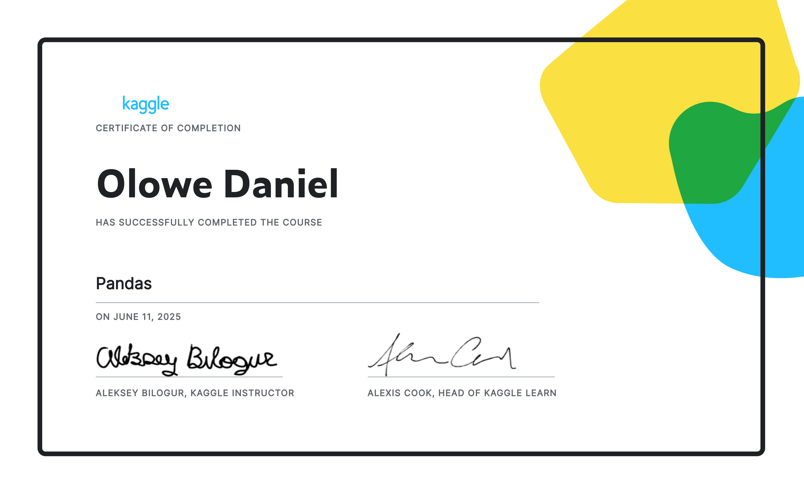
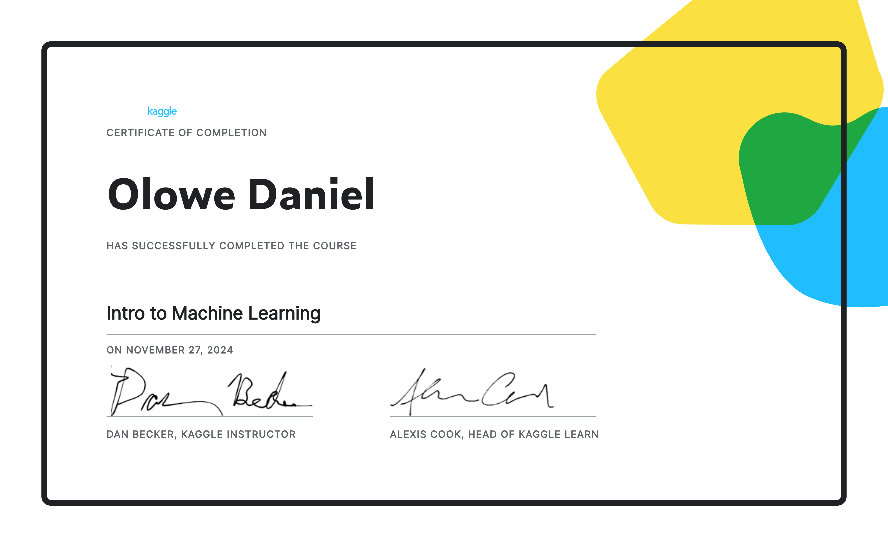

LLM Chatbot
Open repo
Conversational AI chatbot
Streamlit-powered assistant using Hugging Face models and a clean interactive interface for real-time conversations.
AI Engineer · NLP · LLMs
I design and ship practical language systems, intelligent workflows, and product-minded ML experiences that feel polished, useful, and deeply considered.
Core stack
Selected work
Streamlit-powered assistant using Hugging Face models and a clean interactive interface for real-time conversations.
Document QA and summarization workflow built around retrieval-augmented generation and practical LLM reasoning.
Data-science-oriented project focused on building a reliable end-to-end machine learning workflow with strong structure.
Credentials
Python for AI and Data Science

Kaggle · Pandas Certificate

Kaggle · Data Cleaning

Kaggle · Intro to Machine Learning

About
My work sits at the intersection of language models, product thinking, and thoughtful interfaces. I enjoy turning complex AI systems into experiences that feel natural, clear, and dependable.
Outside of engineering, I spend time in video editing and graphic design. That creative practice gives me a stronger eye for visual rhythm, composition, and the human side of polished digital products.